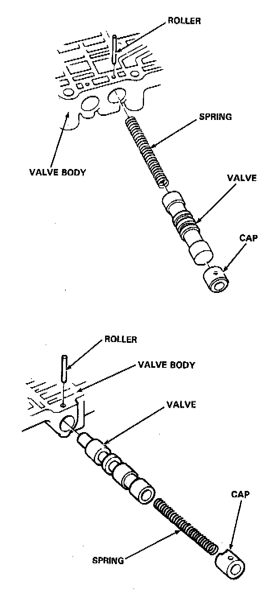
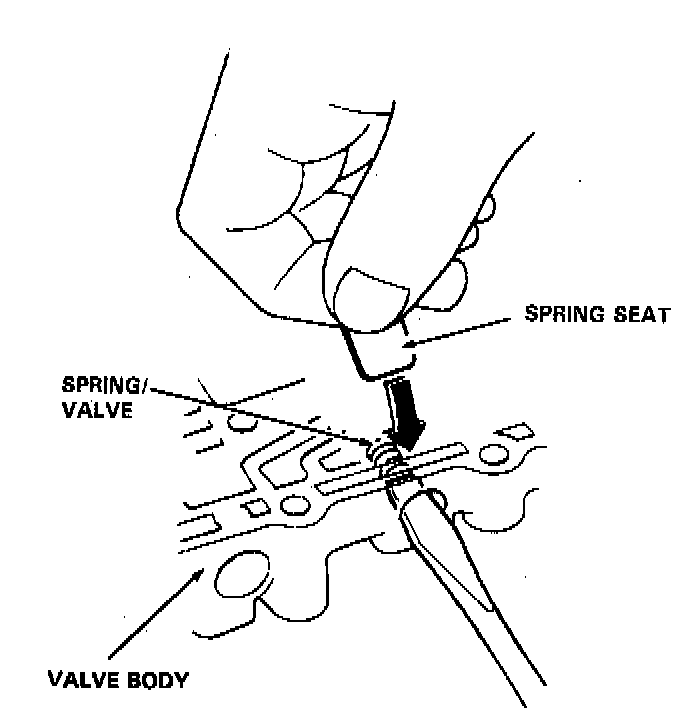
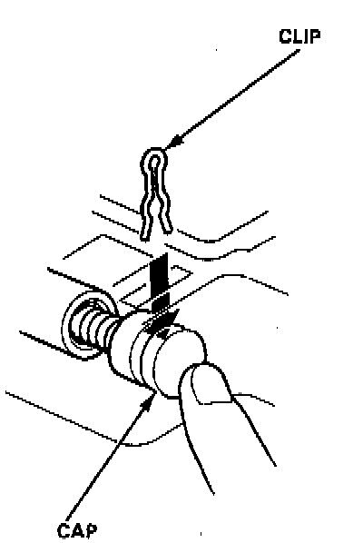

General Assembly
NOTE: Coat all parts with ATF before assembly.
1. Install the valve, valve spring and cap in the valve body and secure with the roller.

2. Set the spring in the valve and install them in the valve body. Push the spring in with a screwdriver, then install the spring seat.

3. Install the valve, spring and cap in the valve body. Push the cap, then install the clip.